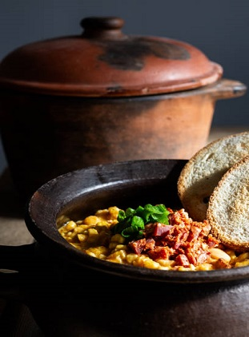

Argentinian food
La gastronomía argentina es una de las más sabrosas del mundo, debido a las increíbles materias primas que emplea, sobre todo la carne. La rica cultura gastronómica argentina combina los sabores de las cocinas europeas, especialmente la española y la italiana, con los de la cocina criolla e indígena, y es conocida por sus carnes de res de altísima calidad.
Nuestros productos argentos

Empanadas salteñas

Ribs de cerdo

Locro patrio

Mollejas al disco
Nuestra ubicación
Tilqui 8625, Córdoba, Argentina
Contacto
Tel: +54 351-123456
E-mail: vazquezcristianr@gmail.com
NewSlatters
Registrate y recibí nuestras novedades